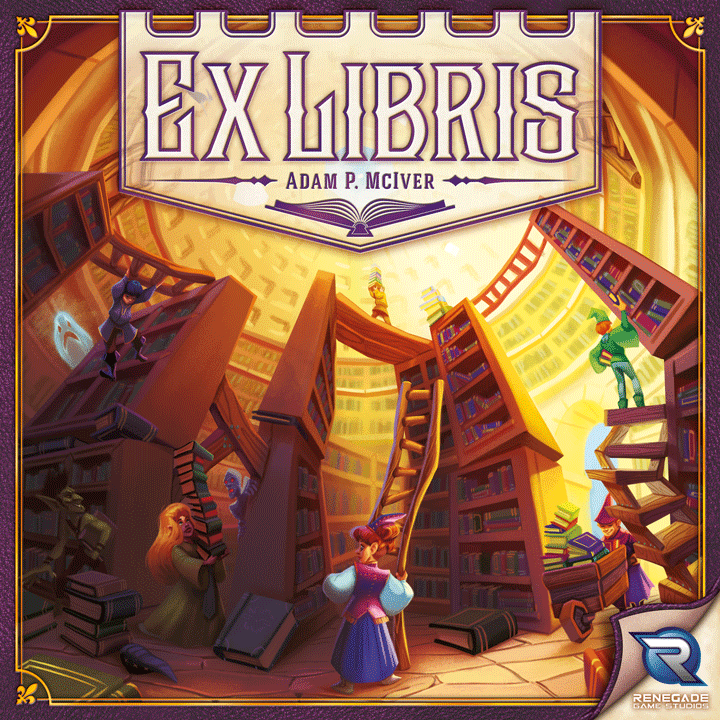
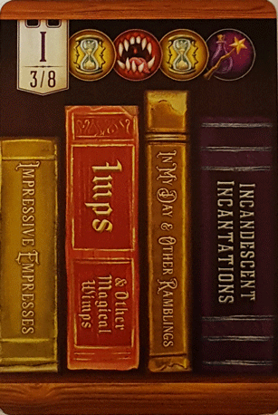
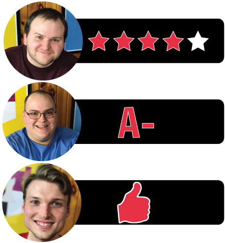

In this Ex Libris review, Board Crazy takes a look at the new card-drafting, worker placement game from Renegade Game Studios. Designed by Adam P. McIver, Ex Libris has its players attempting to build the most prestigious library in the village by collecting prominent works, avoiding banned books, and keeping shelves organized. Continue on to see what we thought of Ex Libris!

D reviews Ex Libris
 (Author’s
note: this review is meant to accompany our gameplay video and will not
go in-depth on the game’s rules. If you’re interested in learning how
the game is played, please watch the video. It’s not bad.)
(Author’s
note: this review is meant to accompany our gameplay video and will not
go in-depth on the game’s rules. If you’re interested in learning how
the game is played, please watch the video. It’s not bad.)
Ex Libris is a marvel. It’s not a perfect game by any stretch of the imagination, but it’s hard not to come away from this game without being blown away by all the time and effort that surely went into its creation. And, to be clear, it takes a ton of time and effort to get any board game worth its salt to a point where it is ready for wide scale distribution. But, with Ex Libris, it sure seems like Adam P. McIver, Renegade Game Studios, and all of the people responsible for putting this product together went an extra mile. There are 152 cards included in this game that contain 510 books, and each one of the books has a unique, clever, thematically-appropriate title. Maybe this doesn’t impress you, dear reader. But as someone who has had to think up book titles for a D&D campaign, that blows me away, especially when you consider the need to account for a fairly even spread of all the letters of the alphabet. It wasn’t necessary to do this and in a lesser game they wouldn’t have, but they did and the game is better for it.
A Book Card – this is the third of eight “W” cards. When shelving books in your library, they have to be in alphabetical and numerical order.
And it’s not like all of the work went into naming the books, either. Every part of Ex Libris is overflowing with a sense of quality. Every component of the game, from the cards to the location and library tiles, to the large, fold-out town board is well-made and brimming with bright, colorful art. The game also comes with a number of unique, wooden meeples that match each of the special assistants. There likely could have been cheaper, easier alternatives in order to differentiate the special assistants, but once again the game makers went the extra mile. They even include a dry-erase board and marker for the end-game scoring, whereas most games would just include a pad of paper and make you provide a writing utensil of your own. Of course, none of this would matter if the game itself weren’t fun to play. Fortunately, it is.
I don’t know if I would call Ex Libris a complicated game, as the moment-to-moment gameplay is fairly straightforward, as are the various goals the players are hoping to accomplish. That said, the game does provide a nice challenge to anyone who is taking it seriously. There are a lot of elements that one needs to account for and balance in order to have a good score in the end, and ignoring even one of them could be the difference between winning and losing. The game also does what any good worker placement game does, which is create a real sense of tension with every choice a player makes. You’ve only got three actions per round (typically), and often if you’re not the first person to take advantage of a location, then it won’t be of much use to you at all. Of course, other times it alternatively can pay off to go last during a round. Needless to say, the wait while your opponents are making their moves can be quite excruciating, albeit in a satisfying way.
The Literary Laboratory – this Library Tile describes its special assistant’s ability.
As I mentioned at the beginning of this review, Ex Libris isn’t perfect. The biggest issue lies with the location tiles. The text on each tile that explains how it works is too difficult to read in its natural position on the board, which inevitably leads to each player having to pick it up and read it themselves at least once. This isn’t an atrocity, but it’s annoying and probably something that could have been done better. Perhaps a bigger issue is that the text on the tiles doesn’t always include everything that you need to know. At the back of the rulebook, all of the locations are described in greater detail, and without referencing these pages it’s entirely possible that you can unwittingly mess something up or even handicap yourself. There aren’t massive exclusions, fortunately, but this is still a big no-no in my book. Also, there is definitely a fairly high degree of randomness involved in the game, which can throw a wrench in even the best of plans. So, keep that in mind if that is the sort of thing that really gets on your nerves.
Despite those few issues, though, Ex Libris is a game that I will not hesitate to recommend. It’s family-friendly, fun, and doesn’t have an overly long playtime once you understand the rules. And, as someone who would love to see more games made with this level of quality, I really hope this game succeeds and turns a profit for its makers. It’s really something special.
D’s Rating: Four Stars out of Five.
Will reviews Ex Libris
 After
reading some of the reviews coming out of Gen Con, I knew that Ex
Libris was a tabletop game that I didn’t want to miss. I read about the
interesting theme, the beautiful artwork, the attention to detail, and
the replayable gameplay. As someone who’s played many games over the
years, I felt my fair share of skepticism. As it turns out, that
skepticism was misplaced. Ex Libris is everything it was hyped up to be.
After
reading some of the reviews coming out of Gen Con, I knew that Ex
Libris was a tabletop game that I didn’t want to miss. I read about the
interesting theme, the beautiful artwork, the attention to detail, and
the replayable gameplay. As someone who’s played many games over the
years, I felt my fair share of skepticism. As it turns out, that
skepticism was misplaced. Ex Libris is everything it was hyped up to be.
The “Monster Manuals” Category Card
When it comes to the artwork and theme, I found both to be brilliantly executed. Thematically, I really enjoyed becoming a librarian in a D&D-esque, fantasy world. All of the tiles and cards adhere to the theme, so much so that I couldn’t help but to feel immersed in the setting. As for Ex Libris’ art, I was thoroughly impressed by all of it. Some of it was appropriately sloppy, which endeared me to the game even more. And then there are the 152 book cards that feature 510 books in several different categories. Each one of these 510 books has a unique title that sets it apart, and they’re all sorted alphabetically. The sheer amount of time and effort that must have been put into the creation of these cards is flabbergasting to consider. It’s a real achievement.
As we finished up our first session of Ex Libris, I knew that I was a fan of its ingenious and unpredictable gameplay. There’s a lot going on here, from worker placement to card drafting and even some tableau building. This “tableau” is your library, which you’re trying to construct in the most logical way in order to earn victory points. The aim of Ex Libris is to build your library in a structured manner, which means that your attention has to be on the alphabetical order of your shelves as well as the category of books that go there. In order to acquire cards, you’ll have to move your “assistants” (the workers) to location tiles that each feature a special ability. This is the worker placement element of the game. Once you have the cards you want, you can shelve them. Once a player shelves enough cards, the end game is triggered and the scores are calculated. Yes, there’s a lot to pay attention to, but Ex Libris is surprisingly intuitive. Within 30 minutes or so, you should have a decent grasp on how this game plays. I applaud the designer, Adam P. McIver, for providing nuanced gameplay that’s so easy to learn.
An example of a Location Tile. Players move their assistants to these locations to complete the actions outlined on the card.
While the book cards are impressively diverse, the location tiles deserve their own praise for being balanced and straight-up fun. Some tiles might allow you to exchange/discard cards for new cards, while others might involve an auction or some form of gambling. Managing when to place your assistants on these tiles and then actually doing it is extremely satisfying. And when you consider how fair and thought-out these tiles are, you come to appreciate Ex Libris even more. I only wish the text on these location tiles was clearer and in its entirety. The artwork on some of these tiles obscures the text instructions for the special actions that correspond with those locations, and this can become frustrating. Also, the instructions on some of these tiles are abbreviated to fit among the artwork. This means you’ll often refer to the rulebook for clarification, which isn’t the worst thing ever. Still, if the artist and designer had accounted for text on these tiles from the get go, this would never had been an issue. It’s kind of annoying.
The second of seven book cards for the letter “A”
Another negative I found with Ex Libris is in regards to the “library tiles” and “special assistants”. At the beginning of the game, each player chooses a library tile, and that tile comes with a special assistant that has a distinctive ability. For example, the “Volcanic Biblioteca” comes with the “Fire Imp” assistant that allows you to discard cards from locations in order to take or shelve cards. That’s a powerful ability and a desirable special assistant to have. The problem is that not all of the special assistants are equally fun to use in Ex Libris. I haven’t played this game too much, but after looking through all of the components, I think I’m able to conclude that some of these assistants are simply better than others. I can’t speculate to their balance against each other, but still, it would have been nice if these tiles and assistants had been made equal.
Overall, Ex Libris is a powerhouse of a board/tabletop game that is what it was hyped up to be, and maybe then some. The art design is spectacular, the gameplay is gratifying, and the overarching attention to detail is superb. Sure, there are some minor inconsistencies with balance, and I didn’t really mention that with any card drafting game like this, there’s a big element of luck. But don’t let the luck factor bother you – Ex Libris evens itself out in the end. Our games have been relatively close, and I have no doubt that the luck swings enough to allow each individual in any gaming group to get a win, given that group plays several sessions. I’ve always considered libraries and librarians to be a bit lifeless, but Ex Libris has made me reconsider that view. I wouldn’t mind being a librarian in a crazy fantasy world.
I give Ex Libris an: A-
Graham reviews Ex Libris
 Ex
Libris was heavily hyped at this year’s Gen Con, so I had some high
expectations going into it. I’ll be blunt – when it comes to mechanics
and rules, there’s little about Ex Libris that makes it stand out from
any other worker placement game, but that’s okay. It’s the attention to
detail and unique theme that makes it one-of-a-kind.
Ex
Libris was heavily hyped at this year’s Gen Con, so I had some high
expectations going into it. I’ll be blunt – when it comes to mechanics
and rules, there’s little about Ex Libris that makes it stand out from
any other worker placement game, but that’s okay. It’s the attention to
detail and unique theme that makes it one-of-a-kind.
This game includes 152 book cards containing a total of 510 books expanding across 6 different categories. Each book has it’s own distinctive title, and these titles are clever, funny, and definitely worth reading. If that’s not impressive, then I don’t know what is. The amount of time and thought that went into it must have been extraordinary. Another part of the design that’s well conceived is the scoring. In Ex Libris, you get points for shelf stability, as well as for having prominent works (popular books) and a diverse selection. In regards to earning victory points, this provides a lot of different strategies to choose from. There isn’t one best strategy, which really helps with the game’s competitiveness and replayability. I really can’t praise Adam P. McIver and Renegade Games enough for the thought and dedication that went into designing this game. This, in combination with the wonderful artwork, really makes the unique theme stand out. We’ve played a few games recently, like Flamme Rouge, that really make me notice how important theme is for board games, and Ex Libris is no exception.
The Inspection Form used to tally up everyone’s scores
While it’s impressive what they were able to accomplish, Ex Libris is definitely not flawless. From our playthroughs, it seems that this game is a little unbalanced. In Ex Libris, each player gets three assistants that can complete the actions on the board. One of those assistants has a special ability, like being able to take extra home actions or shifting cards in your library to reorganize when needed. The thing is, some of the “special assistant” powers seem a little too strong. For example, in our playthrough of Ex Libris I played as the Bookworm. The Bookworm’s ability allows the player to take BOTH home actions (draw / shelve cards), and allows the player to do that again for discarding a card. Typically for a home action, you can either draw one card or shelve (place in your library) one card. So if used to its full potential, the Bookworm could give you three extra actions per turn. It’s easily one of the strongest special assistants in Ex Libris and is borderline overpowered. I haven’t played with all of the different special assistants, so I don’t know if there are any other over-powered abilities. It does appear that the designers have mitigated this issue a bit by allowing players to draw two special assistant tokens at the beginning and then select the one they prefer.
Even though the mechanics don’t really stand out that much from other worker placement games, Ex Libris still nailed the gameplay. It’s very exciting to see which location tiles come out, and since you only have a limited number of moves each turn and each tile only has a couple of spots available, the tension can really build as the game progresses. As you can imagine, drawing book cards is extremely fun as well, just because there are so many of them. Also, drawing book cards is really where the strategy of Ex Libris comes from. When you draw a card, you have find the best way to fit it into your library. You have to consider things like: how many prominent works do my opponents and I have, and how many focus category books have I shelved? Do I have too many banned books? Do I have enough variety? It really takes a lot of thought and strategy to play this game well, but the decisions that must be made aren’t overwhelming either. So despite it not standing out much in terms of mechanics and gameplay, it didn’t really screw anything up either, except for the slight power balance issues in regards to the special assistants.
All in all, Ex Libris has its flaws, but they are minor and can mostly be avoided. And these flaws don’t take away from the entertaining and unique experience. Adam P. McIver and Renegade Game Studios really went above and beyond with Ex Libris. I give it one thumb up.
Ex Libris Game Review – Board Crazy’s Ratings

Leave a Reply
You must be logged in to post a comment.